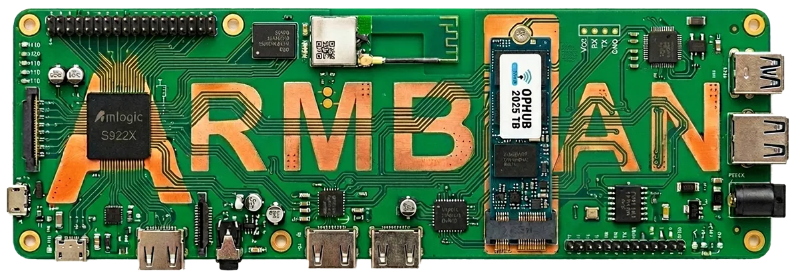
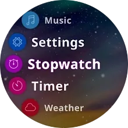

Sonoff S31：改成 ESPHome 本地智能设备 ↗
目标很明确：为 Sonoff S31 使用 ESPHome 配置，摆脱或减少原厂云依赖，并接入 Home Assistant 等本地系统。
当前可用程度可本地控制插座并读取电流、电压、功率、功率因数和电量。 使用前仍要遵守本页的型号边界。
待核缺口 已读取具体型号的配置或维护资料，但 KitAgain 没有实机刷写、测量或长期运行；上游记录也不能保证当前零售批次完全相同。
E1 / 已读具体型号资料D076
DON'T BIN IT. REBUILD IT.
输入设备或型号，看看它能变成信息屏、家庭服务器、媒体播放器，还是本地智能设备。每条路线都告诉你：适不适配、难在哪里、什么时候该停手。
搜索全部 547 条公开记录 →查看 200 个独立项目来源 →不知道从哪开始？
准备动手？
先确认你手里的确切设备和固件，再决定是否值得尝试 KOReader 或其他改造；“Paperwhite”这个系列名不足以选刷机方法。
阅读核对清单与来源 ↗C02 / 实用指南先定义一件要完成的事，再检查启动模式、磁盘和网络。HAOS、DietPi、openmediavault 与 LibreELEC 不是可以任意互换的“旧电脑系统”。
阅读核对清单与来源 ↗C13 / 实用指南ESP32 不是目的，它只是让旧硬件重新联网、显示、播放或桥接信号的一种工具。先认清设备和芯片，再选固件，能少买错板子，也少拆坏一台机器。
阅读核对清单与来源 ↗从中文社区、X 和设备数据库继续找
E1 设备页已经写明芯片、刷写入口、可实现功能、版本边界和恢复条件；其余 E0 线索继续保留，方便后续筛选。两种等级都不冒充 KitAgain 实机验证。
目标很明确：为 Sonoff S31 使用 ESPHome 配置，摆脱或减少原厂云依赖，并接入 Home Assistant 等本地系统。
当前可用程度可本地控制插座并读取电流、电压、功率、功率因数和电量。 使用前仍要遵守本页的型号边界。
待核缺口 已读取具体型号的配置或维护资料，但 KitAgain 没有实机刷写、测量或长期运行；上游记录也不能保证当前零售批次完全相同。
目标是让 HK1 Box 从安卓电视盒子变成 Armbian 小主机，可承载 Docker、文件服务、Home Assistant 或轻量网络服务。
当前可用程度可作为 Armbian 小服务器；社区报告还涉及 LED 显示和风扇 GPIO。 使用前仍要遵守本页的型号边界。
待核缺口 已读取具体型号的配置或维护资料，但 KitAgain 没有实机刷写、测量或长期运行；上游记录也不能保证当前零售批次完全相同。
目标是按设备模板为 BlitzWolf Air Fryer (BW-AF1) 配置 Tasmota，让开关、灯具、插座或传感器通过本地网页、MQTT 或智能家居系统控制。
当前可用程度可通过 MQTT/Home Assistant 读取状态并控制烹饪流程。 使用前仍要遵守本页的型号边界。
待核缺口 已读取具体型号的配置或维护资料，但 KitAgain 没有实机刷写、测量或长期运行；上游记录也不能保证当前零售批次完全相同。
目标是把 GL.iNet GL-AR300M16-Ext 改造成用于自有或明确授权网络的 Wi-Fi 实验路由器；X 原帖提供实物线索，GitHub 项目提供构建路线。
当前可用程度有社交原帖和可访问项目文档，可继续做型号与恢复核查；不是现成镜像推荐。
待核缺口 社交帖子是单一作者陈述，项目支持范围仍需按硬件版本核对；本目录没有刷写或执行无线测试。
200 INDEPENDENT REPOSITORIES
53 个项目已完成来源深审；新增 147 个仓库经 GitHub API 与 README 入口核对后保留为 E0。它们扩展了 NAS、Kindle、手机、摄像头、音频、IoT、机器人、游戏与外设方向，但尚不等于兼容或安装成功。
让 AirPlay 音频可串流到 UPnP、Sonos 与 Chromecast 设备的项目。
可继续核对的设备范围UPnP、Sonos 或 Chromecast 音频端点与服务主机；具体型号和协议行为尚未核验。
候选用途 让现有网络音响接收 AirPlay 音频。
把旧 Android 手机变成 IP 摄像头的简易应用。
可继续核对的设备范围旧 Android 手机；具体 Android 版本、协议、安全和稳定性尚未核验。
候选用途 评估把闲置手机作为局域网摄像头。
用于构建 Armbian ARM/ARM64 单板机系统镜像的官方工具链与脚本。
可继续核对的设备范围上游具有板级配置的 ARM/ARM64 单板机候选；具体板卡支持尚未核验。
候选用途 为旧 ARM 板构建或定制 Linux 系统镜像。
用于 Kobo 墨水屏阅读器应用与应用商店的 SDK。
可继续核对的设备范围Kobo 墨水屏阅读器；具体机型和固件范围尚未核验。
候选用途 调查在现有 Kobo 上安装和分发第三方应用的路径。
不知道项目名也没关系，输入设备、型号或你想实现的用途。
复活星级只使用有来源的维度；不足 3 个有证据维度显示“??? / 尚未评分”。E0–E3 是独立证据标签。 查看评分方法 ↗
用浏览器接收桌面共享，让旧平板成为辅助显示终端。
先看你的设备具有兼容现代浏览器的旧平板/手机/电脑
别忽略 独立扩展屏通常还需虚拟显示适配器；过旧浏览器可能无法运行。
将旧电脑或支持的设备转成专用复古游戏平台。
先看你的设备官方提供映像的 PC / 单板机 / 掌机
别忽略 性能受硬件限制；系统不授予游戏 ROM 的版权。

为仍有可用性能的 PC 或掌机提供可维护的游戏系统。
先看你的设备满足当前硬件要求的 PC 及受支持掌机
别忽略 不是超老电脑通用方案；GPU 支持与镜像类型是硬门槛。
以轻量系统和软件管理降低旧单板机部署服务的负担。
先看你的设备下载页提供映像的单板机及 x86_64 主机
别忽略 映像、架构和 RAM 限制按目标设备核对，不保证任何旧板都可用。
将闲置手机作为电脑视频输入设备。
先看你的设备兼容 DroidCam 移动应用的手机 + Linux 电脑
别忽略 此仓库是 Linux 客户端，不能推断移动端全部开源；持续供电需检查电池。
为可编程的旧传感器、插座和 DIY 板重新配置本地用途。
先看你的设备支持平台与设备配置覆盖的 ESP 等微控制器设备
别忽略 按具体设备配置判断复用，不把购买新开发板的演示计为旧硬件成功案例。

让已有摄像头接入本地目标检测与录像系统。
先看你的设备能提供受支持视频流的旧 IP 摄像头 + 满足要求的服务器
别忽略 AI 在服务器上运行，不能恢复已损坏或无法输出视频流的摄像头。

由服务端渲染 Home Assistant 页面，旧 Kindle 只负责显示。
先看你的设备能运行截图显示脚本的 jailbroken Kindle
别忽略 需另有 Home Assistant 与截图服务，屏幕不是在运行完整浏览器应用。

把旧小主机或瘦客户机改为家庭自动化服务器。
先看你的设备官方安装文档支持的 Generic x86-64 / 单板机
别忽略 要满足架构、启动方式及存储条件；安装映像会覆盖目标磁盘。

用原生 macOS 打印链路恢复无官方 macOS 驱动的 HP Laser 系列用途。
先看你的设备HP Laser 1003/1006/1008 a/w USB + Apple Silicon macOS 26（作者测试范围）
别忽略 AI 开发过程须由作者原始材料支持；USB 测试不代表 Wi-Fi 已验证。
将旧 Kindle 变为可切换内容的信息看板。
先看你的设备项目教程中的旧 Kindle，逐项检查机型与 jailbreak 前提
别忽略 刷新速度、按键和网络脚本适配不应假设跨型号通用。

把旧 Paperwhite 作为 AI 工具用量与桌面信息屏。
先看你的设备已越狱并具备 SSH / FBInk 的 Kindle Paperwhite
别忽略 显示 AI 用量不等于设备运行 AI；项目不负责 jailbreak。

延长旧电子书阅读器在多格式阅读、排版与同步方面的用途。
先看你的设备支持的 Kindle、Kobo、PocketBook、Android 阅读设备
别忽略 各平台安装前提不同；Kindle 一般需要可用的 jailbreak。
用轻量 RetroArch 系统复用旧 PC 与受支持单板机。
先看你的设备Lakka 官方提供映像的 PC / 单板机
别忽略 需核对 GPU、音频和启动兼容性；游戏内容另行合法获取。
将旧小主机或支持的设备改为专用 Kodi 播放器。
先看你的设备官方映像覆盖的 Generic x86_64、Raspberry Pi 等设备
别忽略 不是为所有智能电视提供通用固件；DRM 服务可用性另行判断。
用本地音乐服务器延续 Squeezebox 设备和播放器生态。
先看你的设备Squeezebox 生态播放器及支持的自建播放器
别忽略 在线音乐服务依赖各自插件与服务政策，不能保证所有历史功能。

把旧 PC 和存储硬件改造成局域网 NAS。
先看你的设备满足安装要求的 x86-64 或受支持 ARM 主机
别忽略 操作系统盘与数据盘规划、旧硬盘健康及备份需单独评估。
将旧主机转为轻量网络音频播放器，连接 Squeezebox 生态服务器。
先看你的设备可运行支持平台二进制的旧 PC / Linux 单板机
别忽略 是软件播放器，不保证修复任意实体 Squeezebox 的云功能。

无需替换系统，在闲置 Android 上运行命令行与轻量服务。
先看你的设备满足当前 Android 版本要求的手机/平板
别忽略 Android 后台限制和版本支持仍存在，不等于完整 Linux 内核环境。

让已有小爱音箱转接大模型，保留原设备语音入口。
先看你的设备小爱音箱；README 示例 LX06，其他型号须核对 hardware 参数
别忽略 依赖小米账号和语音接口；并非完全离线固件。
用本地开源手机应用连接部分可穿戴设备，减少厂商云依赖。
先看你的设备官方支持矩阵中的手环、手表与 Android 手机
别忽略 GitHub 可能为镜像；支持程度、认证密钥及功能按设备不同。
在已有 Linux 硬件上部署 Home Assistant 语音终端。
先看你的设备支持音频输入输出的 Linux 主机
别忽略 音频驱动、架构及服务端能力须逐机核对。
以服务端桥接方式为小爱音箱增加大模型对话。
先看你的设备文档兼容表中的小米小爱音箱
别忽略 历史方案；归档与替代项目应优先阅读。

将部分闲置电视盒转为 Linux 轻量服务主机。
先看你的设备项目支持表内的盒子/开发板及准确 SoC/DTB
别忽略 社区适配，不等同 Armbian 官方支持；eMMC 安装风险高于外置启动。

为部分旧 Wear 手表安装替代 Linux 系统。
先看你的设备AsteroidOS 设备表中的 Android Wear 手表
别忽略 蓝牙、传感器、电池和临时启动支持按具体机型核对。
为兼容 Amlogic 电视盒提供专用媒体系统。
先看你的设备官方支持表中的 Amlogic 盒子及 SoC/板型
别忽略 优先核查外置介质启动，不能仅看外壳品牌或 SoC 就认定支持。

为电子墨水屏绘图提供底层工具，支撑旧阅读器看板改造。
先看你的设备项目支持的 Linux framebuffer / Kindle / Kobo 环境
别忽略 绘图库不是即装即用成品；需要上层脚本与设备权限。
为受支持的旧路由器提供替代固件和网络管理功能。
先看你的设备官方兼容表中的 Broadcom ARM 路由器
别忽略 只收录 ARM 仓库；镜像类型、NVRAM 和硬件版本必须匹配。

为已有 PineTime 提供开放手表固件与持续功能演进。
先看你的设备PineTime 智能手表
别忽略 仅适用于对应硬件；不能直接用于普通商业手表。

将旧 Kindle 改为 WHOOP 健康数据看板，提供 AI 辅助设置文档。
先看你的设备项目配置支持的 jailbroken Kindle
别忽略 AI 辅助配置不代表已经验证全部代码由 AI 开发；依赖外部账号/API。

让旧 Kindle 作为 OpenAI 兼容接口的轻量聊天和消息终端。
先看你的设备具备 KUAL 与相应 Python 环境的 jailbroken Kindle
别忽略 模型在外部服务运行；旧设备 TLS/Python 支持需检查。
为官方停止更新的部分 Android 手机和平板提供替代系统。
先看你的设备官方 wiki 列出的 Android 具体型号及代号
别忽略 同商品名不同地区、运营商和型号可能不兼容；解锁通常清除数据。
为部分旧 Chromebook/Chromebox 安装替代固件以运行其他系统。
先看你的设备MrChromebox 支持表中的 ChromeOS x86 设备
别忽略 按主板代号核查；解除写保护方式因机型而异。

将改装 Nest Mini 连接本地或云端对话代理，扩展多设备语音入口。
先看你的设备Google Nest Mini 第二代 + Onju 替换板
别忽略 同一家族的后继版本，不能算作独立硬件复现。
让部分非 ESP 的云依赖智能设备改用本地 MQTT 等控制。
先看你的设备项目支持的 BK7231 等芯片和板型
别忽略 芯片、引脚、校准数据和刷机方式必须逐板确认。

为部分不再被新版 macOS 正式支持的 Mac 提供引导与驱动补丁。
先看你的设备官方支持表内的 Intel Mac
别忽略 不是所有 Mac/系统组合都可用，系统更新可能要求重打补丁。
为部分 IP 摄像头替换开放固件，获得可自主控制的视频流。
先看你的设备OpenIPC 支持的摄像头 SoC/传感器/闪存组合
别忽略 相同外壳不代表相同硬件；备份原固件和网络恢复路径很关键。

复用旧智能网关硬件运行开放系统和本地 Zigbee 服务。
先看你的设备OpenLumi 文档支持的小米网关硬件版本
别忽略 需要按板型核对 UART、备份与刷写方法。

用开放固件延长受支持路由器的网络功能与维护寿命。
先看你的设备Table of Hardware 中对应硬件 revision 的路由器
别忽略 闪存/RAM 太小的设备可能已不支持当前稳定版。

保留旧 iPod 的交互与外形，替换内部硬件成为网络音乐终端。
先看你的设备作者第四代 iPod 改造方案 + Raspberry Pi 等替换硬件
别忽略 定制硬件工程；历史 Spotify 接口及依赖需重新核查。

为兼容旧播放器提供开放固件和格式扩展。
先看你的设备Rockbox 支持表中的 iPod、SanDisk 等播放器
别忽略 必须区分稳定版、开发中与不可用端口；不是所有 iPod 均支持。

保留旧 webOS 电视运行 homebrew 的历史入口。
先看你的设备项目明确列出的旧 LG webOS 固件版本
别忽略 已修复漏洞的新版固件不适用，不提供绕过他人账号锁内容。

替换部分智能插座、灯具与传感器固件，恢复本地控制。
先看你的设备兼容 ESP8266 / ESP32 芯片与引脚模板的智能设备
别忽略 同一商品可能换芯片；涉及市电的拆机不适合无经验用户。
使用轻量开放固件延长受支持摄像头的本地使用寿命。
先看你的设备项目支持列表中的 Ingenic IP 摄像头
别忽略 须按 SoC、传感器和具体配置选择构建。

通过官方安装器为支持的手机安装 Ubuntu Touch。
先看你的设备UBports 设备列表中支持的手机和平板
别忽略 需要匹配 bootloader 和厂商固件前置版本。

让兼容扫地机器人保留本地控制并降低厂商云依赖。
先看你的设备Valetudo 支持列表中的具体扫地机器人型号
别忽略 不支持所有机器人；root 方法和恢复难度随型号变化。

为自有 webOS 电视提供社区应用安装与管理入口。
先看你的设备满足 root 前提的 LG webOS 电视
别忽略 依赖具体固件可用的提权/开发环境；不是电视故障维修方案。
为受支持的 Kindle 提供安装社区软件的前置解锁入口。
先看你的设备官方 jailbreak 指南明确支持的 Kindle 型号/固件组合
别忽略 它是基础设施，不是单独完成信息屏或 AI 改造的方案。

用社区语音服务重新使用 Vector 机器人，并可接入知识问答后端。
先看你的设备Anki / Digital Dream Labs Vector 机器人，按 setup 支持范围
别忽略 要匹配固件与配对流程；不能仅有服务端就认定任何 Vector 可恢复。
将闲置 Linux 设备作为 Home Assistant 语音卫星。
先看你的设备可运行 Linux 的旧 Raspberry Pi 等主机 + 麦克风/扬声器
别忽略 需要上游语音服务；卫星不等于本地运行完整大模型。

为部分旧摄像头提供本地视频流和扩展控制。
先看你的设备README 支持表中的小方/大方及部分 Ingenic 摄像头
别忽略 历史项目；不同生产批次与 bootloader 可能不支持。

接管旧小爱音箱的麦克风和播放链路，连接外部 AI 服务。
先看你的设备小爱音箱 Pro LX06 / 小米智能音箱 Pro OH2P；按型号刷机文档
别忽略 补丁固件有型号限制，不能将教程推广到所有小爱音箱。

用 ESP32-S3 定制主板替换 Nest Mini 主板，复用外壳与扬声器。
先看你的设备Google Nest Mini 第二代外壳与外围部件
别忽略 这是换板改造，不是对原 Google 固件的软件越狱。
PASS IT ON
分享准确型号、做成了什么、哪里失败和怎样恢复，下一位垃圾佬就能少走一点弯路。